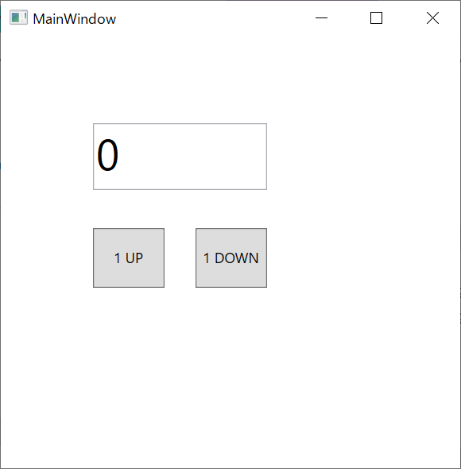

WPFでBindingを使用する方法のまとめです。
概要
WPFは、Windows上で動作するGUIアプリケーションを作成できるフレームワークです。
ToDoリストを管理する、ボタンを押すとTCP/IPでデータを送信する、など様々なGUIアプリが作成可能です。
画面はxaml、処理部はC#で作成します。
WPFの特徴の一つとして「Bindingを使用した画面部と処理部の分離」があげられます。
分離により管理が容易になったり、処理部のテストが容易になったりといったメリットがあります。
以降、WPFでBindingを使用する方法について記載しています。
準備
開発環境はVisualStudioを使用します。
VisualStudioのインストールおよびWPFのHello Worldまではこちらを参考にしてください。
今回作成したGUIアプリ
今回、Bindnigの確認用に、以下を実装したアプリを作成しました。
- 数字の0が初期値で表示されているテキストボックス
- 数字を＋１するボタン
- 数字を－１するボタン
以上です。とてもシンプルです。
このアプリを、5つの実装方法で作成していきます。
- Bindingなし
- DataBindingのみ実装
- DataBindingとCommandBindingを実装
- CommandBindingを少しスマートに実装（Delegate使用）
- ReactivePropertyを使用してDataBindingとCommandBindingを実装
Githubにソースを上げています。 こちら
以下、作ったアプリの説明になります。
1. Bindingなし
コードビハインドに処理を記述します。
コードビハインドとは、xaml.csファイルのことです。

使用Class
SerialPort classを使用します。
NugetでSystem.IO.Portsをインストールすると使えるようになります。
複数ポートを同時に使用しない場合は、staticで宣言することが多いようです。
使用するメソッドは下記です。
| 機能 | メソッド |
|---|---|
| 使用可能ポート取得 | GetPortNames() |
| シリアルポートオープン | Open() |
| シリアルポートクローズ | Close() |
| データ送信 | Write(string) |
| データ受信 | ReadExisting() |
使用可能なポートの取得
以下は、使用可能なCOMポートを取得し、アプリ画面のComboBoxに取得データをbindingするコードです。
ViewModel.cs：
//DataBindig用変数
public ReactiveCollection<string> COMPorts { get; set; }
= new ReactiveCollection<string>();
public void GetCOMPorts()
{
COMPorts.Clear();
string[] ports = SerialPort.GetPortNames();
foreach (var port in ports)
{
COMPorts.Add(port);
}
}
MainWindow.xaml：
<ComboBox ItemsSource="{Binding COMPorts}" />
COMポートを取得するメソッドは、ComboBoxのDropDownOpenedイベントに登録しておくと、ドロップダウンを開く度に使用可能ポートを更新してくれて便利です。
MainWindow.xaml:
<ComboBox DropDownOpened="ComboBoxDropDownOpened_COMPort"/>
MainWindow.xaml.cs:
private void ComboBoxDropDownOpened_COMPort(object sender, EventArgs e)
{
viewModel.GetCOMPorts();
}
シリアルポートのオープン
シリアルポート通信の各種設定をしたのち、接続をOpenします。
コードは以下です。
public void SerialOpen()
{
try
{
serialPort.PortName = port; //選択したport名
serialPort.BaudRate = baudrate; //選択したbaudrate
serialPort.DataBits = 8;
serialPort.Parity = Parity.None;
serialPort.StopBits = StopBits.One;
serialPort.WriteTimeout = 1000;
serialPort.ReadTimeout = 1000;
serialPort.Encoding=Encoding.UTF8;
serialPort.Open();
}
catch (Exception ex)
{
MessageBox.Show(ex.Message);
}
}
シリアルポートのクローズ
シリアルポート接続をCloseします。
public void SerialClose()
{
try
{
serialPort.Close();
}
catch (Exception ex)
{
MessageBox.Show(ex.Message);
}
}
データの送信
文字列を送信します。
public void Send()
{
if (serialPort.IsOpen)
{
serialPort.Write(TXData);
}
}
データの受信
文字列を受信します。
受信データの取り出しは、割込みを使って行います。
データを受信したらすぐにデータを取り込んでくれます。
SerialCom.serialPort.DataReceived += OnReceived;
private void OnReceived(object sender, SerialDataReceivedEventArgs e)
{
RXData += serialPort.ReadExisting();
}
動作確認のためのシリアル通信折り返し方法
シリアル通信で送信したデータを折り返してそのまま受信すると、送信と受信の確認を同時にできて効率的です。
以下のUSB-シリアル変換を使用すれば確認可能です。
TxピンとRxピンを導線で繋いで動作確認します。
Arduinoなどが手元にあれば、折り返しするようプログラミングしても良いですね。
コメントなど
下記のTwitterまで返信orDMお願いします。
WPFで簡単なシリアル通信アプリを作りました。（ブログ用）#Csharp #WPFhttps://t.co/BSPIjahaFD
— やまっく (@YY87750722) August 25, 2021
Profile ---

やまっく
ソフト勉強中のハードエンジニアです。